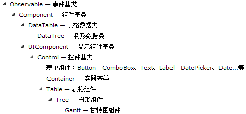
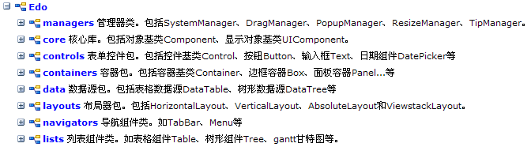
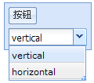

EdoJS的架构体系
继承体系
下面用一个简单的类继承图，来说明EdoJS的类继承关系，这里不一一例举出所有的类，如下图所示：

命名空间

组件、容器、布局器
组件、容器、布局器三大概念是EdoJS的架构精华!
组件是一个基本功能单位，容器包含组件，通过布局器来控制容器内子组件的排布逻辑。
比如，一个Box容器，它可以在其内部放很多组件或容器（容器也是组件），但是容器本身是没有布局子组件的能力的，容器必须依靠此容器依赖的布局器，达到布局子组件的目的。所以，当我们切换容器的布局器，此容器内部子组件的排布方式也随之改变。
下面通过一个简单的例子来说明组件、容器和布局器三者之间的关系：
<script type="text/javascript"> Edo.create({ id: 'box1', type: 'box', layout: 'vertical', //初始布局器 render: document.body, children: [ { type: 'button', text: '按钮' }, { id: 'combo1', type: 'combo', displayField: 'layout', data: [ { layout: 'vertical' }, { layout: 'horizontal' } ], onselectionchange: function(e){ //切换布局器 box1.set('layout', e.selectedItem.layout); } } ] }); </script>
效果图如下：

当combo1切换布局器为horizontal的时候，效果图如下：

更多关于EdoJS命名空间、类继承结构和类信息（属性、方法、事件）资料，请查看Api文档。